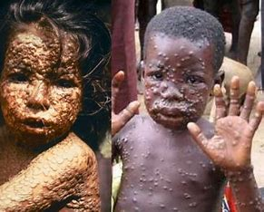

MONKEYPOX
WHAT IS MONKEYPOX?
Monkeypox is a rare disease caused by infection with the monkeypox virus. Monkeypox virus is part of the same family of viruses as variola virus, the virus that causes smallpox. Monkeypox symptoms are similar to smallpox symptoms, but milder, and monkeypox is rarely fatal. Monkeypox is not related to chickenpox. Monkeypox was discovered in 1958 when two outbreaks of a pox-like disease occurred in colonies of monkeys kept for research. Despite being named “monkeypox,” the source of the disease remains unknown. However, African rodents and non-human primates (like monkeys) might harbor the virus and infect people. The first human case of monkeypox was recorded in 1970. Prior to the 2022 outbreak, monkeypox had been reported in people in several central and western African countries. Previously, almost all monkeypox cases in people outside of Africa were linked to international travel to countries where the disease commonly occurs or through imported animals. These cases occurred on multiple continents.
......SIGNS AND SYMPOTOMS OF MONKEYPOX.......
After exposure, it may be several days to a few weeks before you develop symptoms. Early signs of monkeypox include flu-like symptoms, including:
- Fever.
- Chills.
- Headache.
- Muscle aches.
- Fatigue.
- Swollen lymph nodes.
DIAGONOSIS AND TEST
Because monkeypox is rare,
a healthcare provider may first suspect other rash illnesses,
such as measles or chickenpox.
But swollen lymph nodes usually distinguish monkeypox from other poxes.
PREVENTION